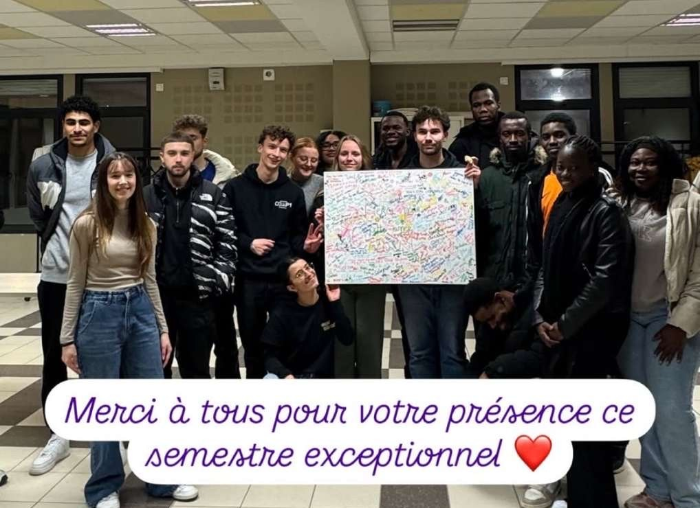

Engagement
Engagements benevoles
Lors de mes 3eme et 4eme annees d'ecole d'ingenieur, j'ai rejoint l'association COP1 a Angers. Chaque jeudi, nous organisions une distribution gratuite de nourriture et de produits de premiere necessite pour des etudiants et des personnes en situation de precarite. Cet engagement m'a permis de developper un sens fort du collectif, de l'ecoute et de la solidarite, ainsi qu'une forte sensibilite aux realites sociales auxquelles de nombreux jeunes et particulierement les etudiants font face. Il a egalement renforce ma conviction qu'un ingenieur doit rester connecte a l'humain et a l'impact social de ses actions.
